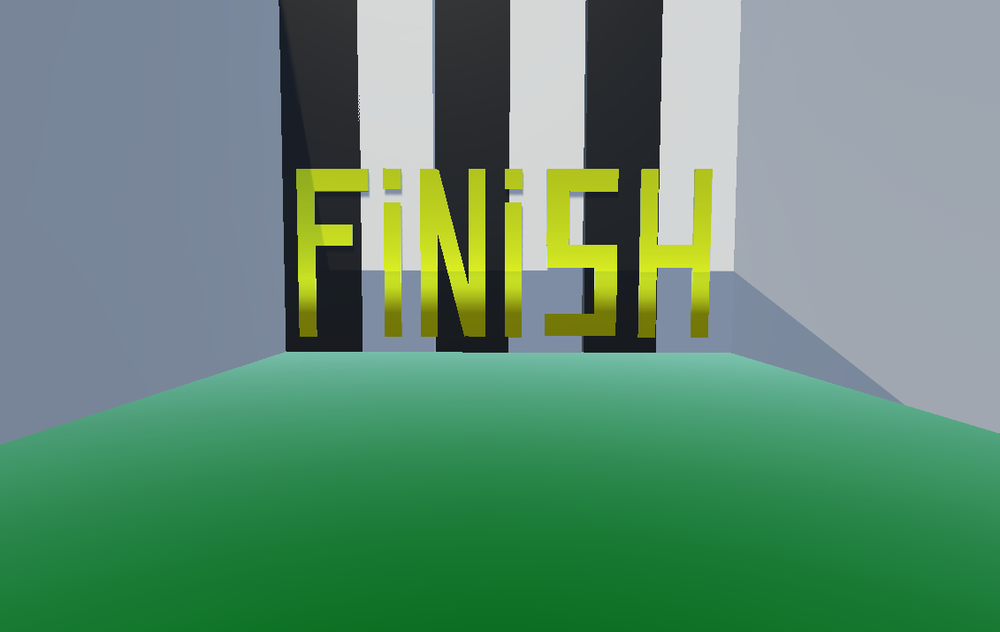

The game named Cube Runner was developed with our team using
Unity Hub. The programming language, on which the game was
written, is C#.
The concept of the game is very simple, due to it is the first
stage of the game, simply, the Beta version.
You are going to play as a yellow cube, which has a realistic physics.
Moreover, your main objective is to try not to touch
any obstacle, which is red cube.
The game is played by the keyboard buttons WASD.
You can move to the right and left side in
order to overcome the obstacles. Furthermore, you are
able to fly over some obstacles, which has low height.
The game has only one level, but in the future,
the number of levels is going to be increased.
Each level finishes with a "FINISH" sign and black and white columns.

In future update we are thinking about adding more levels, which are going to be longer than which are now.
We want to add some coin system. The players will be able to collect money during the game.
Also, we think about adding some effects, such as double coins and speed for these coins.
We want to add a shop where the effects will be sold.
Moreover, in the shop players will be able to buy skins for the cube, change its color and overall view.
Maybe even the shape.
We also think about adding some music to the game, and options to change language.
The game is in Beta test and is very raw. We are going to make some additions and updates to the game. Stay with us in order to not to skip the release of the game.